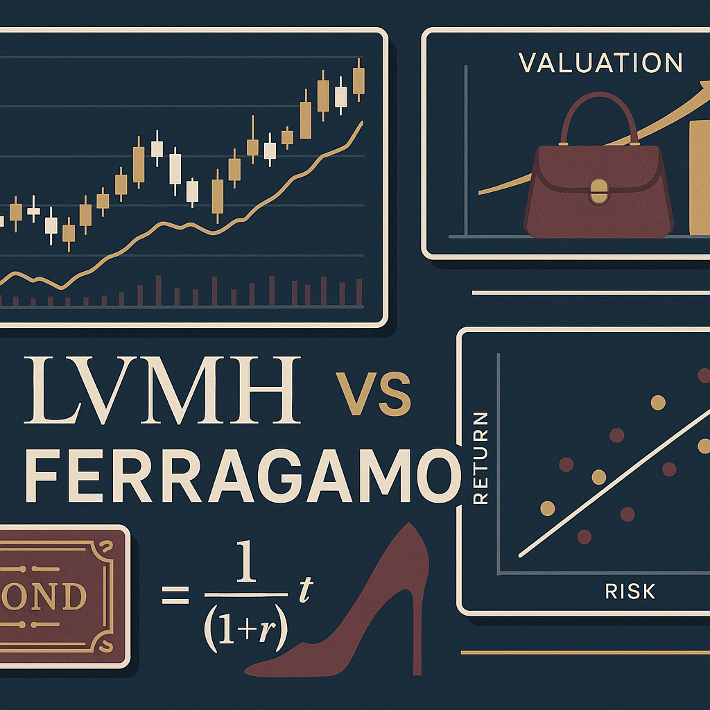
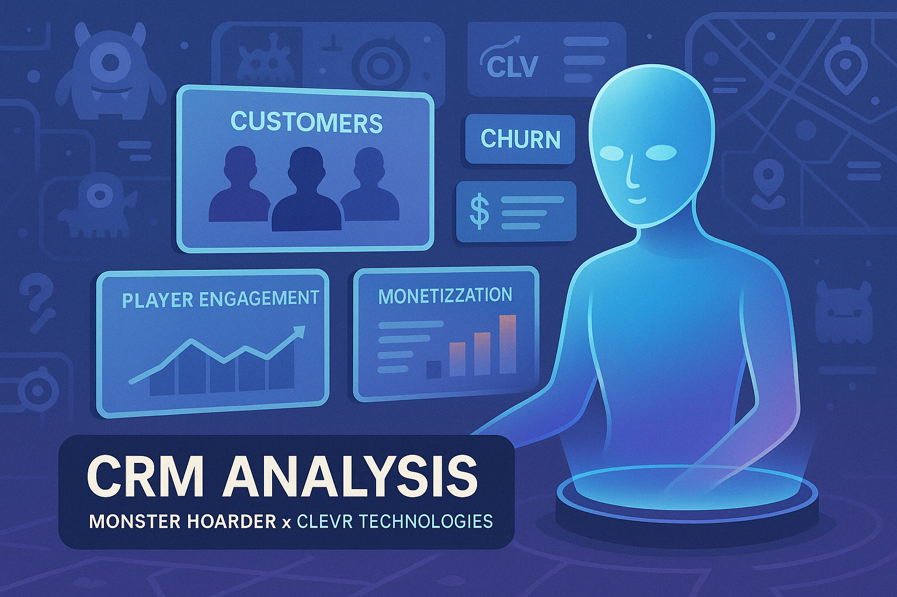
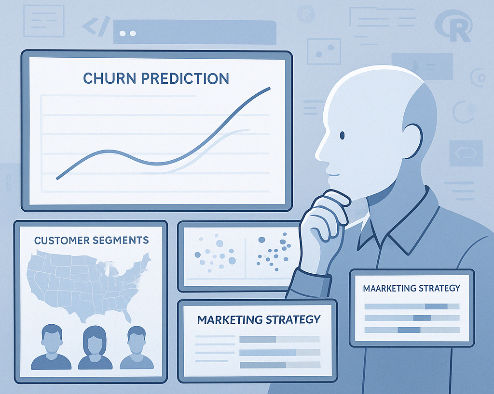
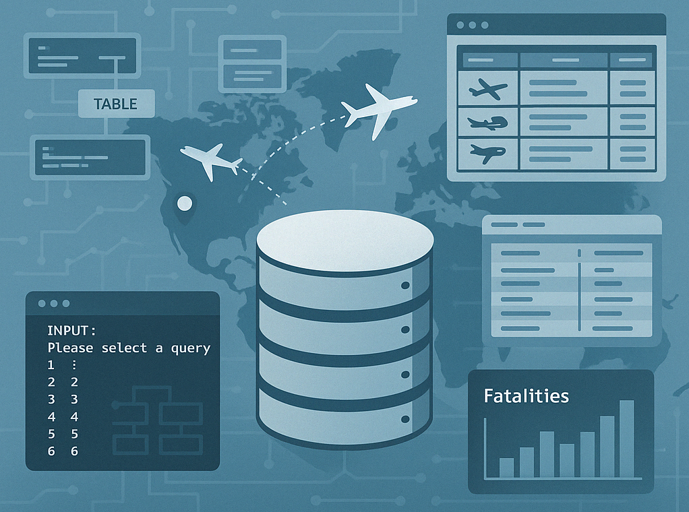
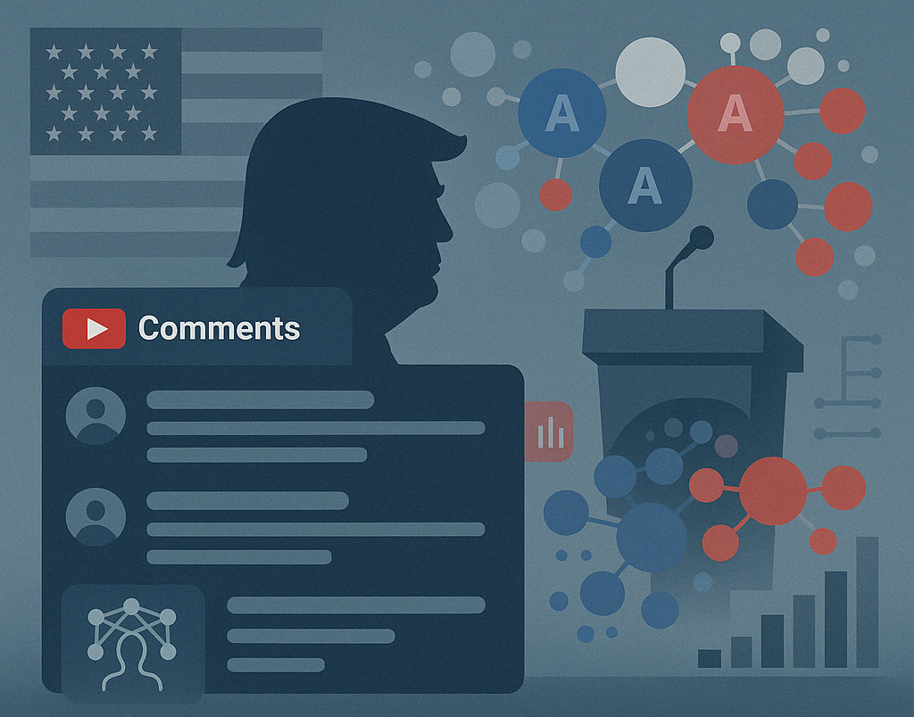
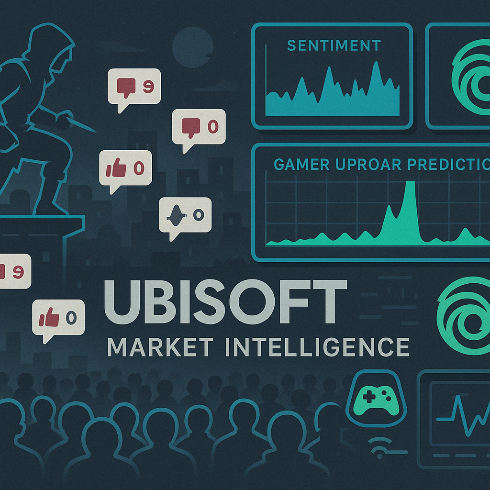

Hi! I'm Giulia Macis, a soon-to-graduate student in Marketing Analytics
I transform complex data into actionable strategies that enhance customer experience,
drive engagement, and optimize marketing performance across digital channels.
Portfolio
These projects reflect my unique blend of technical expertise and strategic thinking I’ve developed through my MSc in Marketing Analytics and BSc in Management and Computer Science. From machine learning and NLP to CRM analysis and storytelling, each project showcases my ability to turn complex data into compelling narratives and actionable insights.

CRM Analysis

Churn Prediction & Segmentation

Relational Database Design
Power BI Project

YouTube Comment Analysis

Ubisoft Market Intelligence
About Me
I have always been fascinated by how data intersects with technology and consumer psychology. I aim to apply my skills to industries like luxury, tech, and energy.
With expertise in marketing and data analysis, I believe in the power of continuous development. I am looking for an environment that would help me evolve.
My mission is to create something impactful, to move beyond the feeling of being just one person in a vast world, and to leave a mark that matters.
Contact
Feel free to reach out via the following links: